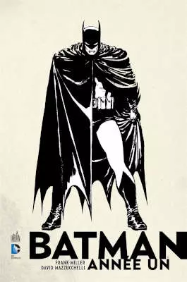

A melhor HQ do universo de super-heróis

Apesar dos primeiros registros de quadrinhos serem do final do século XIX, a popularidade das HQs veio somente nos anos 40 do século passado. Se no início o público alvo eram jovens e crianças, logo o público adulto começou a ser alcançado por conta de uma grande variedade de estilos e formatos.
Uma boa história jamais envelhece e Batman parece ser unanimidade quando o assunto é HQ de super-heróis. Criada em 1986 por Frank Miller e David Mazzucchelli, Ano Um é uma revolucionária reinterpretação da origem do Batman – sobre quem ele é e como se tornou o que é. Esta edição especial de capa dura inclui a história na íntegra, uma introdução pelo próprio escritor Frank Miller e um posfácio ilustrado pelo artista David Mazzucchelli.